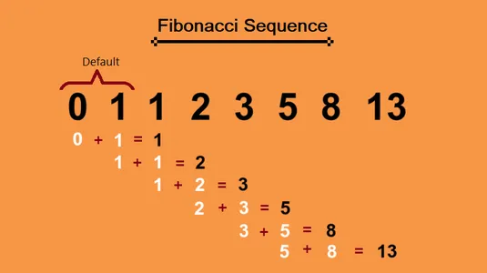

Introduction
This page covers key concepts in General Mathematics.
General Mathematics plays a crucial role in computer programming, as many programming concepts are rooted in mathematical principles. From basic arithmetic to advanced algorithms, mathematics helps programmers write efficient and optimized coding
In computer programming, mathematics is deeply integrated into algorithm development, data structures, and computational logic. Arithmetic operations are used for calculations, while algebra helps in defining expressions and variables. Geometry plays a crucial role in computer graphics and game development, while statistics and probability are widely used in artificial intelligence, data analysis, and machine learning. Additionally, logic and set theory form the basis of database management and decision-making in programming.
Visual Representation

Some data about General Mathematics from the web
| Mathematical Concept | Description | Application in Computer Programming |
|---|---|---|
| Arithmetic | Basic operations: addition, subtraction, multiplication, division. | Used in calculations, loops, and functions. |
| Algebra | Equations, expressions, and variables. | Essential for algorithms, formulas, and coding logic. |
| Geometry | Shapes, angles, and spatial understanding. | Used in game development, graphics, and computer vision. |
| Statistics | Data collection, analysis, mean, median, probability. | Applied in machine learning, AI, and data analysis. |
| Logic & Boolean Algebra | Logical operations (AND, OR, NOT), truth tables. | Fundamental for programming conditions, decision-making, and database queries. |
| Trigonometry | Study of angles and triangles. | Used in physics-based simulations, robotics, and animations. |
| Matrices & Linear Algebra | Arrays, transformations, vector spaces. | Key in graphics rendering, AI, and scientific computing. |
| Set Theory | Understanding collections of objects and relationships. | Important for database management and relational logic. |
| Number Systems | Binary, decimal, octal, hexadecimal. | Essential for digital circuits, cryptography, and low-level programming. |